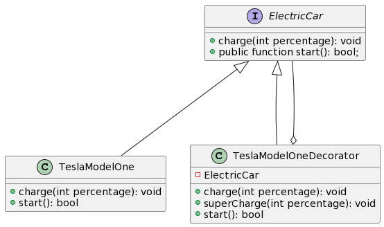

Si ta përdorim modelin dekorues (eng. Decorator Pattern).
Modelet e dizajnimit të kodit janë një mënyrë shumë e mirë për të përmirësuar menagjimin e kodit dhe për të zvogëluar numrin e gabimeve(eng. bugs). Njëra nga modelet më të përdorura është modeli Dekorues, i cili mundëson që të shtojmë logjikë në një objekt pa e ndryshuar implementimin origjinal të objektit.
Qëllimi i këtij artikulli është të shpjegojë se si përdoret ky model dhe si të aplikohet në dizajn. Gjithashtu do të marr disa shembuj se si aplikohet në kod që të kuptohet më lehtë në mënyrë që ti ta aplikosh në projektin tënd.
Definicioni #
Modeli dekorues është ashtu edhe si tingëllon, është një model ose klasë që e dekoron një objekt pa pasur nevojë të bëjmë ndryshime në klasën ekzistuese.
Ky model bën pjesë në kategorinë e modeleve të strukturimit të kodit.
Qëllimi #
Pse duhet të përdorim këtë model dhe çfarë problemi na mundësonë që të zgjedhim? Disa nga opsionet ku mund ta përdorim këtë model janë: Nëse klasa ekzistuese ka nevojë të përdoret edhe pse kemi nevojë për ndryshim të logjikës. Nëse dëshirojmë të shtojmë validim të inputit ose menaxhim të problemeve. Nëse kodi i vjetër e përdor logjikën që ekziston dhe kemi nevojë që ta ndryshojmë atë në varësi se si objekti sillet ose jep rezultat. Shtimi i logjikës së regjistrimit ose raportit (eng. Logging)
UML Diagrami #


Shembulli #
Ta zëmë që jemi duke punuar me vetura, andaj kemi vetura elektrike dhe me benzinë. Më implementimin e më poshtëm e kemi implementuar pjesën për vetura elektrike por pas një kohe kërkohet që veturat elektrike të mund të mbushen edhe me super chargers.
Tash për ne kjo nënkupton që duhet të supportojmë veturat që vetëm janë prodhuar por duhet që të shtojmë funksionalitet se si veturat të reja do të mbushen.
Aplikimi në kod #
interface ElectricCar {
function charge(int percentage): void;
function start(): bool;
}
class TeslaModelOne implements ElectricCar {
private const MIN_BATTERY_PERCENTAGE = 5;
private int $chargedPercentage = 0;
public function charge(int $percentage): void {
$this->chargedPercentage += $percentage;
}
public function start(): bool
{
return $this->batteryPercentage() > self::MIN_BATTERY_PERCENTAGE;
}
}
// Ta zëjmë që vetëm e kemi të implementuar një dizajn si ky më lartë.
// nëse kemi raste ku veturat elektrike do të jenë të paisura me mundësi mbushje të shpejtë
class TeslaModelOneDecorator implements ElectricCar {
private ElectricCar $car;
public function __construct(ElectricCar $car) {
$this->car = $car;
}
public function superCharge(int $percentage): void {
$this->car->charge($percentage + $percentage);
}
public function start(): bool
{
return $this->car->start();
}
}
// E shohim si e kemi shtuar metoden `superCharge` ku e shton funksionalitetin pa e ndryshuar klasën `TeslaModelOne`
$tesla = new TeslaModelOneDecorator(new TeslaModelOne())
$tesla->superCharge(20);
if ($tesla->start()) {
echo "It is started!";
}
Një shembull tjetër mund të jetë nëse dëshirojmë të egzekutojmë një komandë ku është mekanizmi i ri-egzekutimit (eng. Retry Mechanism).
//Ta zëmë që e kemi një komand `CreateOrder`
class CreateOrder implements Command {
public function execute(): void
{
//egzekuto hapat për të kryer punën
}
}
//Implementimi i dekoruesit do ta ket per detyr ta egzekutoj komanden nese kemi ndonje error
class CreateOrderWithRetryDecorator implements Command {
public function __cosntruct(Command $command) {}
public function execute(): void {
try {
$this->command->execute();
} catch (Exception $e) {
$this->command->execute();
}
}
}
Përmbledhja #
Modeli dekorues të mundësonë ta shtojmë logjikën në objektet ekzistuese, pa pasur nevojë ta ndryshosh objektin ekzistues. Është zgjidhje e lehtë dhe elegante, nuk humb kohë për të menduar për zgjidhje të tjera sepse identifikohet shumë lehtë se ku aplikohet.
Pra herën tjetër kur të shtoshë logjikë në një klasë, mendo për modelin dekorues edhe shikoje se a mund ta aplikosh. Një nga këshillat për të pasur kod më të organizuar dhe më të qartësuar është që kodi të mbahet i vogël dhe i ndarë në klasa dhe metoda adekuate. Emërtimi të jetë i thjeshtë dhe me kuptim të plotë.
P.sh. Nëse një klasë jep si rezultat shumën e dy numrave, është më mirë ta quajmë shumëzuesi sesa Kalkulatori sepse kalkulatori përmbanë më shumë se një logjikë, andaj për ta kuptuar se çfarë kryen ajo klasë duhet ta hapim kodin dhe të shohim.